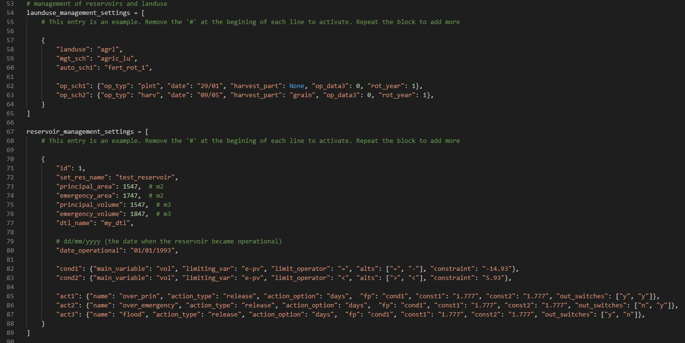

Management Options
SWAT+ AW allows you to specify land use management options and reservoir management
options. To do this fill the management sections in the config file as shown in
Figure 4. To set the management for more than one land use, repeat the block with
curly brackets with different landuse name and options inside them. To skip
management options, delete or comment all the blocks with the curly brackets. The
above procedure also applies to reservoir management options.

Figure 4: Management sections in config.py
Land use Management Options
To specify land use management options, first, set the target land use as seen in
line 58 (Figure 4). Refer to the
SWAT+ documentation for more details on land use
types in SWAT+. Line 59 (Figure 4) shows the name given to the management schedule
that will
have the details for managing the selected landuse. If the user specifies a name
that already exists in the database, SWAT+ AW will update it with the details
specified here.
Users can add automatic schedules that are already available in SWAT+ by specifying
the name of the automatic schedule under "auto_sch1". The names of the automatic
schedules are available in the lum.dtl file that is documented in the SWAT+ documentation
available from
the SWAT+ website. If there are more than one
automatic schedules, they should be numbered sequentially.
Mannual schedules can be added by
Mannual schedules can be added by adding details under "op_sch". These need to be
sequentially numbered too (Figure 4). For mannual schedules, the user will need to
provide "op_typ (which is the type of operation to be carried out in the
specified land use), date (which is the day and month when the operation is
carried out), harvest_part (if the operation is harvesting, what part of the
plant is harvested?) and rot_year (which specifies the number of years before
operation is performed again - in a cycle)
Reservoir Management Options
If the user needs to set up reservoir management make sure there is a reservoir in
the model being set up. However, this needs knowledge of decision tables which are
introduced in this video and in
this paper .